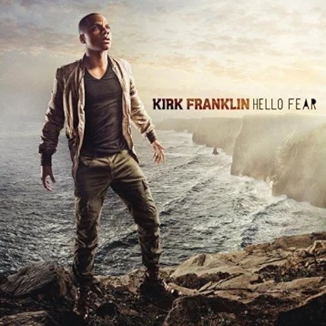
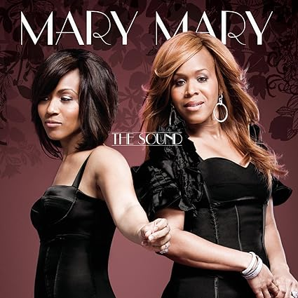

This paper presents seven outstanding albums from different music genres, highlighting their importance and influence. These albums, both old and new, showcase the best of musical creativity, leaving a lasting impact on the music world.
By Alex Jean
This song stresses the importance of having faith in God and not being afraid to be different from others. It encourages people to prioritize their relationship with God and embrace their uniqueness, promoting a more genuine connection with a higher power.
Listen to Alex Jean on Amazon MusicBy Kirk Franklin
This album represents the importance of being God-fearing.
Listen to Kirk Franklin on Amazon MusicBy Mary Mary
This is an old-school album that brings beats and old jams about worshiping Jesus and loving Him.
Listen to Mary Mary on Amazon MusicBy Koryn Hawthorne
This song represents God’s children and the purpose of following Him and being called His child.
Listen to Koryn Hawthorne on Amazon MusicBy Caleb Gordon

This album expresses the joy and contentment that come from following God. Its songs capture the happiness and peace found in a life dedicated to faith, creating a musical celebration of spiritual fulfillment.
Listen to Caleb Gordon on Amazon MusicBy The King Will Come
This album conveys the idea of God's arrival through His son, emphasizing the need for everyone to be prepared for this significant event. It encourages listeners to stay vigilant and spiritually ready for the arrival of God's son, highlighting the importance of faith and readiness in one's journey of faith.
Listen to By The King Will Come on Amazon MusicBy Saint Dru
This album highlights the need to believe in God and not fear being different. It urges individuals to prioritize their connection with God and embrace their distinctiveness, fostering a more genuine relationship with a higher power.
Listen to Saint Dru on Amazon Music